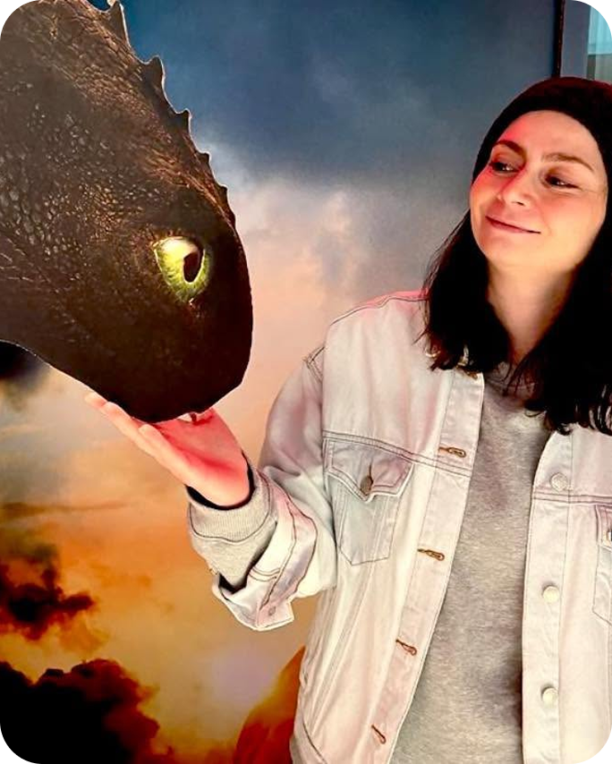

I am originally from Athens, Greece but I have lived and worked in Amsterdam for a few years and now here in Stockholm.
In Athens, I studied Early Childhood Education at the University and worked as a public classroom kindergarten teacher for 6 years. However, my love for technology and computers led me to pursue design. During Covid, I made the change; I studied UX Design and started working as a designer.
Now, after five years of working as a designer, I have decided to study front-end development to be able to understand my dev colleagues but to also learn how to produce fully functional web sites and apps from design to development.